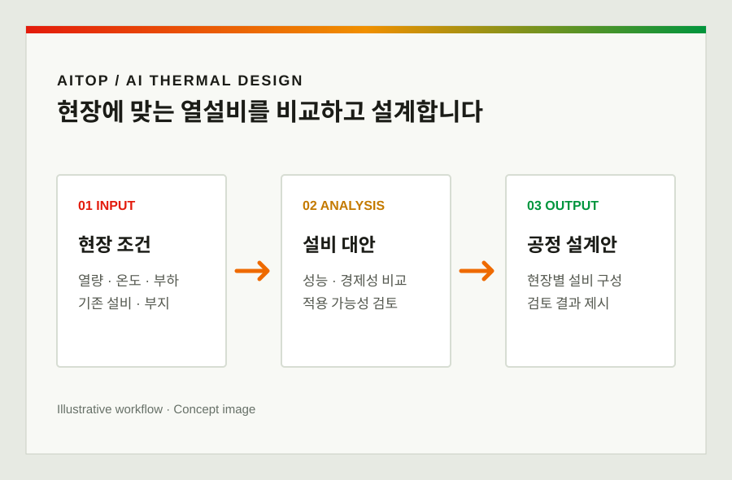

기술
최적설계와 열공급을 잇는
두 가지 기술
AITOP은 산업용 열설비 AI 최적설계 플랫폼, SoHProtes는 산업용 태양열 히트펌프 시스템입니다.

INPUT필요 열량·온도와 유체, 폐열 유무, 부지 면적, 기존 설비, 기후와 부하 패턴
ANALYSIS설비 조합 선별, 열·물질수지와 연간 성능 시뮬레이션, 경제성 비교
OUTPUT현장 조건에 맞는 공정 설계안과 대안별 성능·탄소감축·경제성 검토 결과
Inside AITOP
설비 조합부터 경제성까지
한 흐름으로 검토합니다.
보일러, 전기보일러, 히트펌프, 태양열 등 가능한 열원을 선별하고 열·물질수지, 연간 운전 성능과 투자 타당성을 비교합니다.
분석 항목은 리플릿과 스파크업 발표자료에 소개된 플랫폼 구성입니다. 실제 제공 산출물은 과업 범위에 따라 정합니다.
02 / Solar heat pump
SoHProtes
태양열을 열원으로 활용해 산업공정에 열을 공급하는 히트펌프 시스템입니다. 리플릿은 폐열이 없는 공정과 60℃ 이상 열공급도 검토 대상으로 제시합니다.
System flow
태양열 → 히트펌프 → 축열 → 공정
태양열 집열기로 모은 열을 히트펌프가 공정 온도로 높이고, 온수는 축열조에 저장해 필요할 때 공급합니다.
Field demonstration
공장 실증에서 확인한 성능
스파크업 발표자료는 2024년 2월 설치한 김포 공장의 태양열·고온 히트펌프 시스템 실증을 소개합니다.
80℃폐열 없이 공급한 공정열 온도
3.12히트펌프 COP · 발표자료상 공인기관 시험 결과
56%해당 공장 5개월 운전비 절감 사례
발표자료의 운전비 비교는 1,532만 원 → 675만 원입니다. 해당 공장의 조건과 비교 기간에 한정된 수치이며, 다른 현장의 성능이나 절감률을 보장하지 않습니다. 시험성적서와 산정 세부 조건은 공개 범위를 확인해야 합니다.